In the circuit below,
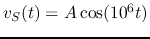 with some unknown
peak value 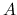, 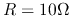, and 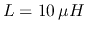. The the RMS value
of 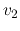 acorss  is measured to be 10 V. It is also known that
is measured to be 10 V. It is also known that
 and 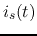 to be in phase.
and 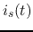 to be in phase.
- Find
 .
.
- Find the RMS values of 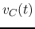 and
 .
.
- Find the RMS values of 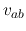 and 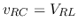.
- Find the peak value of .

Solution
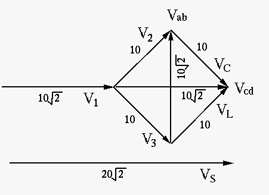
As and are in phase (zero angular difference),
the admittance of the parallel combinatiion of the RL and RC
branches is real with imaginary part equal to zero:
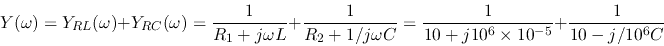
For 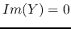, we need to have
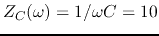, i.e.,
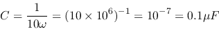
The impedance of the parallel combination of the RL and RC branches
is
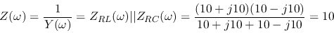
As
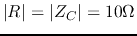,
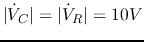. But as
they are 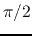 apart in phase, we have
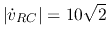.
We also see that
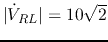. However, their
phase difference is , and
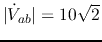.
The currents through RC and RL branches are:
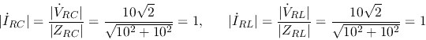
But their phase difference is , we have
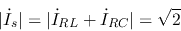
The voltage across  is
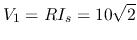, and
is
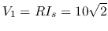, and
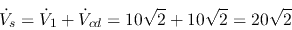
The peak value is therefore
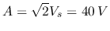